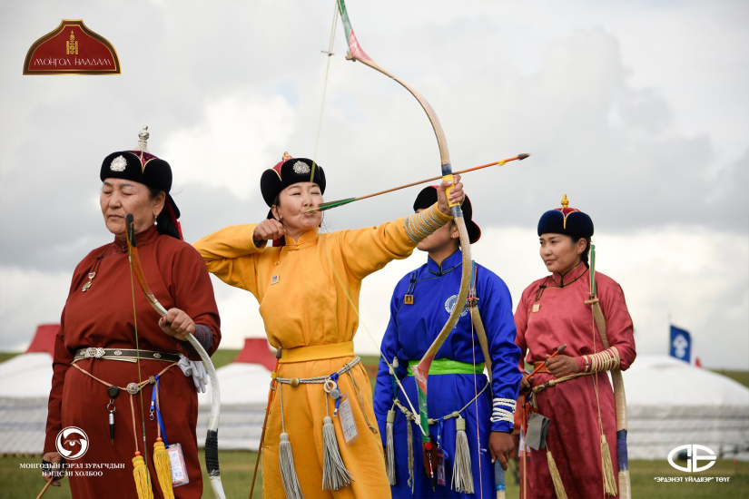

MONGOLIAN TERADITIONAL ARCHERY
Archery or Mongolian archery is a festival where Mongolians test their skills.Archery is one of the four types of modern national fetivals.There are three types of archery: Buryat archery, Khalkh archery,and Uriankhai archery.
Other
Khalkh Archery
Uriankhai Archery
LINK VEDIO